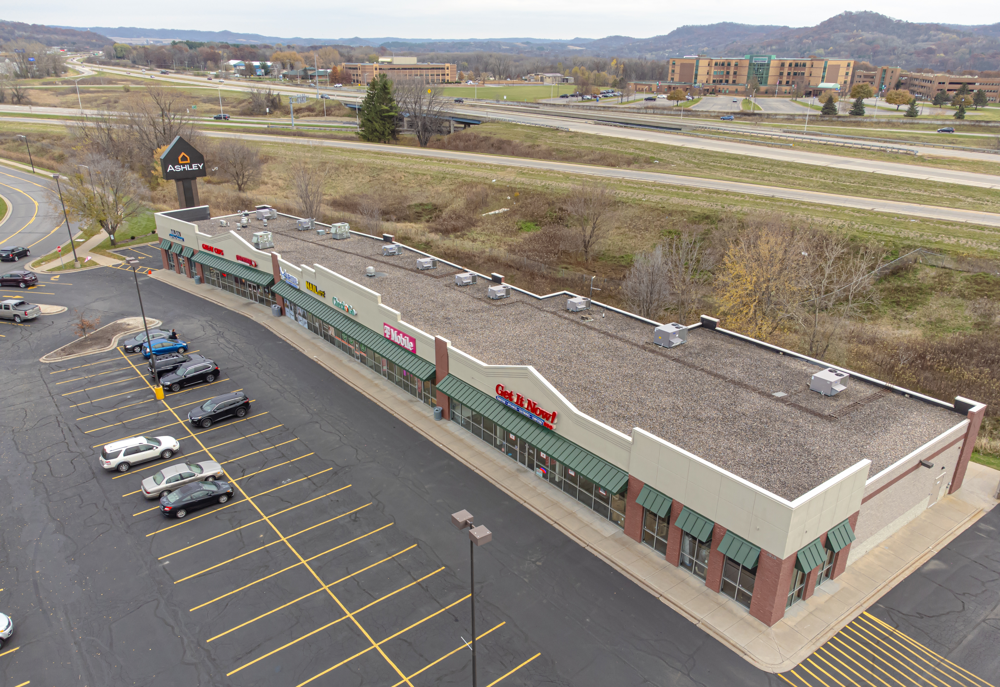
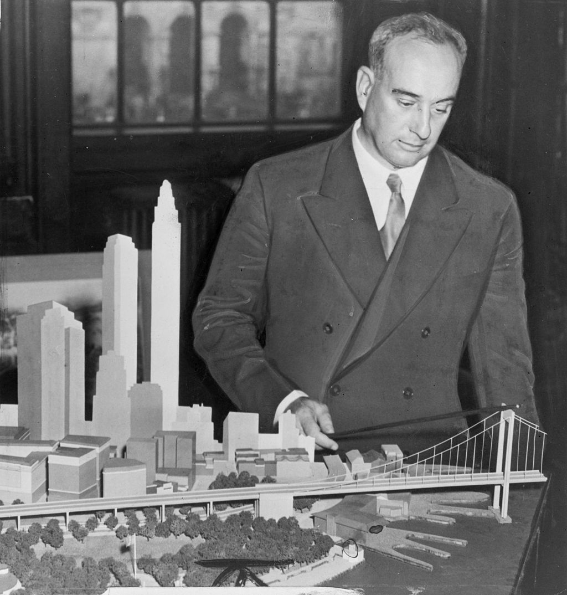
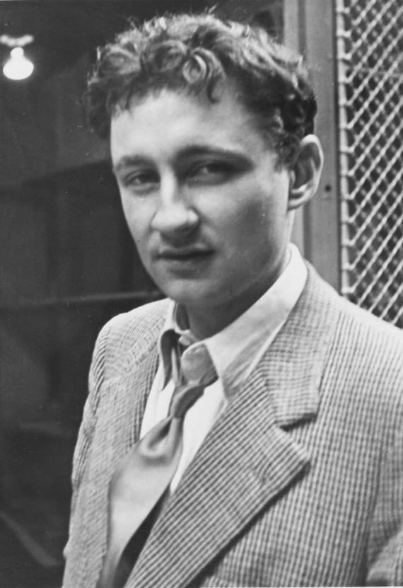

Introduction to Urban Design: Cities, Observation, and the Making of Place
Columbia University | Pre-College Programs | Urban Planning and Design | Summer 2026
What is Urban Design?
- Key Question:
- Why do some places feel vibrant, memorable, and welcoming while others feel confusing, uncomfortable, or forgettable?
- Urban design attempts to answer this question through the built environment.
What is Urban Design?
What is Urban Design?
{kind=link}
What is Urban Design?

Source: Suburban Strip Mall Example
{kind=link}
Guiding Principle 1:
Urban Space Doesn’t Just Happen
Every street, park, sidewalk, building, and public space is the result of decisions, rules and codes.
Urban Design Shapes:
- How we move
- Where we gather
- What we see
- What we remember
- How we experience space (cities)
Guiding Principle 2:
Urban Design Works at Many Scales
- Large Scale > Small Scale
- Bench
- Sidewalk
- Street
- Neighborhood
- City
- Region
Eames Powers of Ten

Source: Eames Powers of Ten
Columbia University as a Designed Place
Charles McKim’s 1894 Campus Master Plan
Columbia’s Morningside Heights campus was intentionally designed at one point in time.
- Question: How has the campus become connected to the surrounding city over time?
Columbia University Campus - Dated 1897
Master Planning - Design the city from above
- Master Planning Goals:
- Order
- Efficiency
- Monumentality
- Infrastructure
Robert Moses as Master Planner
- Moses shaped 20th century New York through ‘mega’ infrastructure projects:
- Roads
- Bridges
- Parks
- Housing
- Expressways

Source: Robert Moses NYPAP
Jane Jacobs as Observer
Instead of looking from above, Jacobs prioritized Looking from the sidewalk.
Successful places depend upon:
- People
- Sidewalks
- Activity
- Diversity
- Observation
Moses vs Jacobs
Two Ways of Seeing Cities
| Moses | Jacobs |
|---|---|
| Plan from above | Observe from below |
| Infrastructure | Everyday life |
| Large systems | Human experience |
| Efficiency | Diversity |
- Question: Who was right?
A Third Perspective
Guy Debord - Prominent and provocative French philosopher
Cities are not only planned.
Cities are experienced.
Prominent advocate of the Dérive.

Source: Guy Debord
What is a Dérive?
- Dérive = Drift
- A deliberate walk through the city.
- Not to reach a destination.
- But to observe.
- Dérive can and should prompt questions:
- What attracts us?
- What repels us?
- What shapes our movement?
Formal Definition of Dérive
The dérive (French: [de.ʁiv], “drift”) is an unplanned journey through a landscape, usually urban, in which participants stop focusing on their everyday relations to their social environment. Developed by members of the Letterist International, it was first publicly theorized in Guy Debord’s “Theory of the Dérive” (1956). Debord defines the dérive as “a mode of experimental behaviour linked to the conditions of urban society: a technique of rapid passage through varied ambiances.”
Source: Dérive
Observation Before Analysis
Urban designers begin by:
- Observing
- Interpreting
- Asking Questions
Observation → Analysis → Design
What Will We Do This Afternoon?
Reading the Campus Edge
We will:
- Walk
- Observe
- Document
- Ask Questions
Focus:
- How does the Columbia campus connect to the surrounding neighborhood?